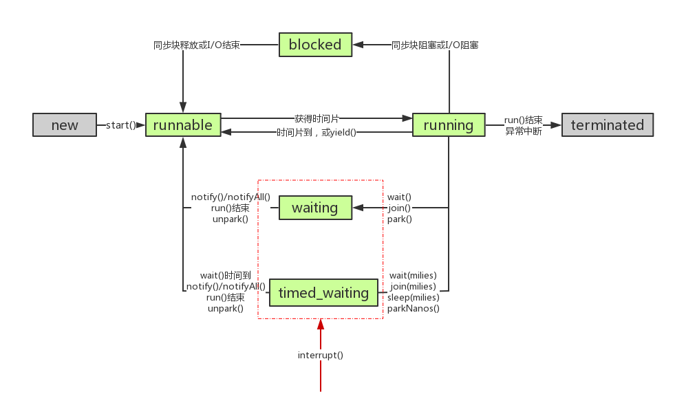

1、AQS 是什么？
- AQS 是 AbstractQueuedSynchronizer 的缩写，直译为抽象队列同步器，是用来构建锁和同步器的框架
- 它使用一个 int 成员变量 state 表示同步状态，通过改进的 CHL 队列来完成资源获取线程的管理
- 改进的 CHL 队列实现采用懒加载带有 dummyHead 的双向链表实现
- 常用的 ReentrantLock、Semaphore、CountDownLatch 等都是基于此框架快速实现（模板方法模式）
2、AQS 整体框架

- 上图中有颜色的为Method，无颜色的为Attribution。
- 总的来说，AQS框架共分为五层，自上而下由浅入深，从AQS对外暴露的API到底层基础数据。
- 当有自定义同步器接入时，只需
重写第一层所需要的部分方法即可，不需要关注底层具体的实现流程。当自定义同步器进行加锁或者解锁操作时，先经过第一层的API进入AQS内部方法，然后经过第二层进行锁的获取，接着对于获取锁失败的流程，进入第三层和第四层的等待队列处理，而这些处理方式均依赖于第五层的基础数据提供层。
3、AQS 使用方式（以 ReentrantLock 为例）
ReentrantLock 是 JUC 并发包中提供的可重入锁，通过设置 state 与 AQS 进行交互，从而完成可重入锁的功能。ReentrantLock 具有公平和非公平获取锁的方式，组合的 Sync 继承自 AQS。

- 以非公平方式获取锁（ReentrantLock 默认是非公平方式），具体调用逻辑如下，其中蓝色表示自定义同步器的逻辑，紫色表示 AQS 的框架流程。可以看到 ReentrantLock 实现的主要是 tryAcquire 和 tryRelease。

- 以公平方式获取锁，仅仅去需要将上图的 ReentrantLock.NonfairSync#tryAcquire 和 ReentrantLock.Sync#nonfairTryAcquire 替换成 ReentrantLock.FairSync#tryAcquire 即可
小结：实际上有了 AQS ，我们需要实现的函数只有以下5个，一般不需要全部实现，tryAcquire-tryRelease 和 tryAcquireShared-tryReleaseShared 一般实现一对即可。特别的，ReentrantReadWriteLock 既实现了独占获取，也实现了共享获取。
| 方法名 | 描述 |
|---|---|
| protected boolean isHeldExclusively() | 该线程是否正在独占资源。只有用到Condition才需要去实现它。 |
| protected boolean tryAcquire(int arg) | 独占方式。arg为获取锁的次数，尝试获取资源，成功则返回True，失败则返回False。 |
| protected boolean tryRelease(int arg) | 独占方式。arg为释放锁的次数，尝试释放资源，成功则返回True，失败则返回False。 |
| protected int tryAcquireShared(int arg) | 共享方式。arg为获取锁的次数，尝试获取资源。负数表示失败；0表示成功，但没有剩余可用资源；正数表示成功，且有剩余资源。 |
| protected boolean tryReleaseShared(int arg) | 共享方式。arg为释放锁的次数，尝试释放资源，如果释放后允许唤醒后续等待结点返回True，否则返回False。 |
4、AQS 源码的内部实现
4.1、AQS 中队列数据结构组成
- 请求资源的线程在资源获取不到的情况下入队，不会直接将线程入队，而是将线程保存在Node节点中，然后入队
Node 类的定义：
401static final class Node {2 static final Node SHARED = new Node(); // 共享，多个线程可以同时执行，如 Semaphore3 static final Node EXCLUSIVE = null; // 独占，只有一个线程可以执行，如 ReentrantLock45 static final int CANCELLED = 1;6 static final int SIGNAL = -1;7 static final int CONDITION = -2;8 static final int PROPAGATE = -3;910 volatile int waitStatus; // 5 种状态11 volatile Node prev;12 volatile Node next;13 volatile Thread thread;14 Node nextWaiter; // 存储在 condition 队列中的后继节点1516 final boolean isShared() {17 return nextWaiter == SHARED;18 }1920 final Node predecessor() throws NullPointerException {21 Node p = prev;22 if (p == null)23 throw new NullPointerException();24 else25 return p;26 }2728 Node() { // Used to establish initial head or SHARED marker29 }3031 Node(Thread thread, Node mode) { // Used by addWaiter32 this.nextWaiter = mode;33 this.thread = thread;34 }3536 Node(Thread thread, int waitStatus) { // Used by Condition37 this.waitStatus = waitStatus;38 this.thread = thread;39 }40}这里的定义很清晰，主要需要注意节点的状态，也就是 waitStatus，在 Node 中定义了4种状态，还有一种初始状态0，具体说明入下：
| 状态 | 状态说明 |
|---|---|
| CANCELLED(1) | 表示当前结点已取消调度。当 timeout 或被中断（响应中断的情况下），会触发变更为此状态，进入该状态后的结点将不会再变化。 |
| SIGNAL(-1) | 表示后继结点在等待当前结点唤醒。在当前节点释放的时候需要unpark后继节点。后继结点入队时，会将前继结点的状态更新为 SIGNAL。 |
| CONDITION(-2) | 表示结点等待在 Condition 上，当其他线程调用了 Condition 的 signal() 方法后，CONDITION 状态的结点将从等待队列转移到同步队列中，等待获取同步锁。 |
| PROPAGATE(-3) | 共享模式下，前继结点不仅会唤醒其后继结点，同时也可能会唤醒后继的后继结点。 |
| 0 | 新结点入队时的默认状态。 |
队列示意图：

4.2、AQS 源码解读之加锁操作（独占模式）
这里继续以 ReentrantLock 非公平实现来看 AQS 框架运作原理（但不失一般性），首先看整体运作流程

注（图中存在连接错误）：(AQS)CAS修改共享资源State成功？是 应该连接到获取锁成功
4.2.1、ReentrantLock 静态内部类 NonfairSync 中的 lock 函数
61final void lock() {2 if (compareAndSetState(0, 1)) // 先尝试抢占一次锁3 setExclusiveOwnerThread(Thread.currentThread());4 else5 acquire(1); // 第一次抢占锁不成功走 acquire 逻辑6}
4.2.2、AQS 的 acquire 函数
71// 独占方式获取锁，忽略中断，如有中断，结束前补上中断2// 尝试失败，调用 addWaiter 加入到队列尾部3public final void acquire(int arg) {4 if (!tryAcquire(arg) && // 尝试获取一次，非公平和公平实现方式由具体自定义同步器实现 5 acquireQueued(addWaiter(Node.EXCLUSIVE), arg))6 selfInterrupt();7}
4.2.3、ReentrantLock 静态内部类 NonfairSync 中的 tryAcquire 函数
31protected final boolean tryAcquire(int acquires) {2 return nonfairTryAcquire(acquires);3}
4.2.4、ReentrantLock 静态内部类 Sync 中的 nonfairTryAcquire 函数
181final boolean nonfairTryAcquire(int acquires) {2 final Thread current = Thread.currentThread();3 int c = getState();4 if (c == 0) { // 此时 state 正好被释放，入队前再尝试抢占一次5 if (compareAndSetState(0, acquires)) {6 setExclusiveOwnerThread(current);7 return true;8 }9 }10 else if (current == getExclusiveOwnerThread()) {11 int nextc = c + acquires;12 if (nextc < 0) // overflow13 throw new Error("Maximum lock count exceeded");14 setState(nextc);15 return true;16 }17 return false;18}
4.2.5、AQS 的 addWaiter 函数
151// 将节点加入到队列尾部并返回这个新节点2// 如果当前队列没有 dummyHead，也就是 pred == null，只能走 enq，否则尝试直接插入队尾3private Node addWaiter(Node mode) {4 Node node = new Node(Thread.currentThread(), mode);5 Node pred = tail;6 if (pred != null) { // 尝试将新节点快速插入队尾方式7 node.prev = pred;8 if (compareAndSetTail(pred, node)) {9 pred.next = node;10 return node;11 }12 }13 enq(node); // 失败，调用 enq 入队14 return node;15}
4.2.6、AQS 的 enq 函数
161// 将节点插入队列，如果先前没有创建 dummyHead，新建一个2private Node enq(final Node node) {3 for (;;) {4 Node t = tail;5 if (t == null) { // Must initialize6 if (compareAndSetHead(new Node())) // 自旋 + cas 方式保证一定创建一个 dummyHead7 tail = head;8 } else {9 node.prev = t;10 if (compareAndSetTail(t, node)) { // 自旋 + cas 方式保证新节点一定加入到队列尾部11 t.next = node;12 return t;13 }14 }15 }16}
4.2.7、AQS 的 acquireQueued 函数
241// 对于 node，判断他是否处于队列中的第一个节点（dummyHead 后的第一个节点），如果是，使用 tryAcquire 尝试获取资源2// 获取资源成功，node 节点的线程将完成它对应的操作，此时 AQS 内部将 head 重新设置为 node3// 如果不是队列中的第一个节点，那么判断是否需要 park4final boolean acquireQueued(final Node node, int arg) {5 boolean failed = true;6 try {7 boolean interrupted = false;8 for (;;) {9 final Node p = node.predecessor();10 if (p == head && tryAcquire(arg)) {11 setHead(node);12 p.next = null; // help GC13 failed = false;14 return interrupted;15 }16 if (shouldParkAfterFailedAcquire(p, node) && // 为了避免长时间自旋造成性能消耗，看看能否 park 当前线程（node）17 parkAndCheckInterrupt()) // 进入waiting状态，直到被unpark()18 interrupted = true;19 }20 } finally {21 if (failed)22 cancelAcquire(node);23 }24}Q：什么情况下会调用cancelAcquire方法？
A：当函数中抛出异常的时且 failed == true 时会调用此方法
4.2.8、AQS 的 setHead 函数
xxxxxxxxxx61// 朴实无华的更新头节点的操作2private void setHead(Node node) {3 head = node;4 node.thread = null;5 node.prev = null;6}
4.2.9、AQS 的 shouldParkAfterFailedAcquire 函数
讲解如下代码前先回顾下线程的状态切换

xxxxxxxxxx241// 检查与更新 pred 节点的状态（此时 node 没有获取到资源）2// 如果可以 park，返回 true3private static boolean shouldParkAfterFailedAcquire(Node pred, Node node) {4 int ws = pred.waitStatus;5 if (ws == Node.SIGNAL)6 return true; // pred 的 waitStatus 是 Node.SIGNAL，表示释放资源时会唤醒 node，因此 node 可以放心的去休息了7 if (ws > 0) { // 如果被取消，那么通过 do-while 将所有的 cancelled 节点跳过并重新连接，保证 pred 的 waitStatus <= 08 do {9 node.prev = pred = pred.prev;10 } while (pred.waitStatus > 0);11 pred.next = node;12 } else {13 /*14 * waitStatus must be 0 or PROPAGATE. Indicate that we15 * need a signal, but don't park yet. Caller will need to16 * retry to make sure it cannot acquire before parking.17 */18 // 将 pred 的 waitStatus 设置为 Node.SIGNAL，按道理这里 node 节点应该可以休息，但这里后面返回 false 19 // 原因如上注释，是为了再进行一次 tryAcquire，确保无法获取资源后再 park20 // 这么设计是为了减少频繁的 park 和 unpark 操作造成的延迟和资源浪费21 compareAndSetWaitStatus(pred, ws, Node.SIGNAL); 22 }23 return false;24}
xxxxxxxxxx51// park 当前线程，使其休息2private final boolean parkAndCheckInterrupt() {3 LockSupport.park(this);4 return Thread.interrupted();5}
4.2.10、AQS 的 cancelAcquire 函数
xxxxxxxxxx441// 如果获取失败，使用 cancelAcquire 将节点的 waitStatus 的状态设置为 Node.CANCELLED2private void cancelAcquire(Node node) {3 // Ignore if node doesn't exist4 if (node == null)5 return;6 node.thread = null;7 // Skip cancelled predecessors8 Node pred = node.prev;9 while (pred.waitStatus > 0)10 node.prev = pred = pred.prev;1112 // predNext is the apparent node to unsplice. CASes below will13 // fail if not, in which case, we lost race vs another cancel14 // or signal, so no further action is necessary.15 // 获取过滤后的前驱节点的后继节点16 Node predNext = pred.next;1718 // Can use unconditional write instead of CAS here.19 // After this atomic step, other Nodes can skip past us.20 // Before, we are free of interference from other threads.21 // 将当前节点的状态设置为 Node.CANCELLED;22 node.waitStatus = Node.CANCELLED;2324 // 针对当前节点 node 的所处状态，采取相应的措施25 if (node == tail && compareAndSetTail(node, pred)) { // 如果 node 是尾节点，直接将 pred.next 设置为 null 26 compareAndSetNext(pred, predNext, null);27 } else { // 如果 node 是队列中非尾节点，需要进行链表重新连接28 // If successor needs signal, try to set pred's next-link29 // so it will get one. Otherwise wake it up to propagate.30 int ws;31 if (pred != head && // node 不是队列第一个节点，即中间节点32 ((ws = pred.waitStatus) == Node.SIGNAL || // node 的前驱节点状态是 Node.SIGNAL33 (ws <= 0 && compareAndSetWaitStatus(pred, ws, Node.SIGNAL))) && // 此时前驱节点不是取消状态，将其状态设置成 Node.SIGNAL34 pred.thread != null) { // 前驱节点的线程不为 null，也就是有效节点35 Node next = node.next; // 获取当前节点的后继36 if (next != null && next.waitStatus <= 0) // 后继存在且状态不是取消状态37 compareAndSetNext(pred, predNext, next); // 将前驱的的 next 连接到后继，即 pred.next = next;38 } else { // 如果 node 是队列中的第一个节点（dummyHead 后的第一个），那么唤醒后继节点 39 unparkSuccessor(node); // Wakes up node's successor, if one exists. => 具体逻辑放在 release 函数逻辑后讲解40 }4142 node.next = node; // help GC43 }44}针对节点的重连接，图解如下
- cancel 的 node 是 tail 节点

- cancel 的 node 是队列中的非首尾节点（pred 可能不直接连 currentNode，因为会跳过被取消的节点）

- cancel 的 node 是队列中的第一个节点
注意：可以看知道，next 指针可能存在断连，而 prev 指针不会，所以整理压缩队列的时候都是使用 prev 指针进行压缩
4.3、AQS 源码解读之解锁操作（独占模式）
刚刚说了 ReentrantLock 的加锁操作，这里讲解下解锁操作
解锁相对于加锁来说，走的都是同一套逻辑，即 sync（ReentrantLock的内部抽象类）中的 tryRelease，这里完整走一遍流程
4.3.1、ReentrantLock 中的 unlock 函数
xxxxxxxxxx31public void unlock() {2 sync.release(1);3}
4.3.2、AQS 中的 release 函数
xxxxxxxxxx101// 调用自定义同步器的 tryRelease 函数，释放成功后，如果队列中存在 dummyHead，尝试唤醒后继节点2public final boolean release(int arg) {3 if (tryRelease(arg)) {4 Node h = head;5 if (h != null && h.waitStatus != 0)6 unparkSuccessor(h);7 return true;8 }9 return false;10}
4.3.3、ReentrantLock 中的 tryRelease 函数
xxxxxxxxxx121protected final boolean tryRelease(int releases) {2 int c = getState() - releases;3 if (Thread.currentThread() != getExclusiveOwnerThread())4 throw new IllegalMonitorStateException();5 boolean free = false;6 if (c == 0) {7 free = true;8 setExclusiveOwnerThread(null);9 }10 setState(c);11 return free;12}
4.3.4、AQS 中的 unparkSuccessor 函数
x
1private void unparkSuccessor(Node node) {2 /*3 * If status is negative (i.e., possibly needing signal) try4 * to clear in anticipation of signalling. It is OK if this5 * fails or if status is changed by waiting thread.6 */7 int ws = node.waitStatus;8 if (ws < 0)9 compareAndSetWaitStatus(node, ws, 0); // 将状态更新为 01011 /*12 * Thread to unpark is held in successor, which is normally13 * just the next node. But if cancelled or apparently null,14 * traverse backwards from tail to find the actual15 * non-cancelled successor.16 */17 Node s = node.next; // 下一个可能需要被唤醒的节点18 if (s == null || s.waitStatus > 0) { // 如果为 null 或者是被取消状态19 s = null;20 for (Node t = tail; t != null && t != node; t = t.prev) // 使用循环从后往前找到最靠前且状态未取消的节点21 if (t.waitStatus <= 0)22 s = t;23 }24 if (s != null) // 存在这样的后继，唤醒该节点的线程25 LockSupport.unpark(s.thread);26}
4.4 简述公平加锁方式下，AQS 如何提供支持的
- 看代码前先说调用逻辑：
ReentrantLock.FairSync#lock
=> AQS.acquire
=> ReentrantLock.FairSync#tryAcquire
=> AQS.hasQueuedPredecessors
- 先看一下 ReentrantLock 的操作
x
1final void lock() {2 acquire(1);3}45// => AQS#acquire67/**8 * Fair version of tryAcquire. Don't grant access unless9 * recursive call or no waiters or is first.10 */11protected final boolean tryAcquire(int acquires) {12 final Thread current = Thread.currentThread();13 int c = getState();14 if (c == 0) { // 如果 state 被释放15 if (!hasQueuedPredecessors() && // 且队列中没有等待的节点，可以尝试直接获取 state，而不是直接入队16 compareAndSetState(0, acquires)) {17 setExclusiveOwnerThread(current);18 return true;19 }20 }21 else if (current == getExclusiveOwnerThread()) {22 int nextc = c + acquires;23 if (nextc < 0)24 throw new Error("Maximum lock count exceeded");25 setState(nextc);26 return true;27 }28 return false;29}3031// => AQS#hasQueuedPredecessors
- 再看 AQS 提供的支持
x
1// 公平获取锁方式相对于非公平方式仅仅是 tryAcquire 的实现不同而已2public final void acquire(int arg) {3 if (!tryAcquire(arg) &&4 acquireQueued(addWaiter(Node.EXCLUSIVE), arg))5 selfInterrupt();6}78// => ReentrantLock#tryAcquire910// 如果队列中有线程排在当前线程之前，返回 true11// 如果当前线程排在队列头或者队列为空，返回 false12public final boolean hasQueuedPredecessors() {13 // The correctness of this depends on head being initialized14 // before tail and on head.next being accurate if the current15 // thread is first in queue.16 Node t = tail; // Read fields in reverse initialization order17 Node h = head;18 Node s;19 return h != t &&20 ((s = h.next) == null || s.thread != Thread.currentThread());21}当 h != t 时： 如果 (s = h.next) == null，等待队列正在有线程进行初始化，此时队列中有元素，需要返回 true（这块具体见下边代码分析）。如果 (s = h.next) != null，说明此时队列中至少有一个有效节点。如果此时 s.thread == Thread.currentThread()，说明等待队列的第一个有效节点中的线程与当前线程相同，那么当前线程是可以获取资源的；如果 s.thread != Thread.currentThread()，说明等待队列的第一个有效节点线程与当前线程不同，当前线程必须加入进等待队列。
xxxxxxxxxx201/**2 * Inserts node into queue, initializing if necessary. See picture above.3 * @param node the node to insert4 * @return node's predecessor5 */6private Node enq(final Node node) {7 for (;;) {8 Node t = tail;9 if (t == null) { // Must initialize10 if (compareAndSetHead(new Node())) // head 与 tail 第一次指向不一致，且 head->next == nullptr11 tail = head; // head 与 tail 短暂的一致指向 dummyHead，这个时候队列虽有节点，但尚未连接，会出现插队情况（state == 0）12 } else {13 node.prev = t;14 if (compareAndSetTail(t, node)) { // head 与 tail 第二次指向不一致，且 head->next == nullptr15 t.next = node;16 return t;17 }18 }19 }20}
4.5 简述共享模式下，AQS 如何提供支持的
xxxxxxxxxx51// 其中 tryAcquireShared 是自定义同步器来实现的，在 AQS 中相当于一个模版方法2public final void acquireShared(int arg) {3 if (tryAcquireShared(arg) < 0)4 doAcquireShared(arg);5}
xxxxxxxxxx311/**2 * Acquires in shared uninterruptible mode.3 * @param arg the acquire argument4 */5private void doAcquireShared(int arg) {6 final Node node = addWaiter(Node.SHARED);7 boolean failed = true;8 try {9 boolean interrupted = false;10 for (;;) {11 final Node p = node.predecessor();12 if (p == head) {13 int r = tryAcquireShared(arg); // 返回的是剩余的资源数 remaining => r14 if (r >= 0) {15 setHeadAndPropagate(node, r); // 设置头节点，并尝试看看能否传播到下一个节点16 p.next = null; // help GC17 if (interrupted)18 selfInterrupt();19 failed = false;20 return;21 }22 }23 if (shouldParkAfterFailedAcquire(p, node) &&24 parkAndCheckInterrupt())25 interrupted = true;26 }27 } finally {28 if (failed)29 cancelAcquire(node);30 }31}
xxxxxxxxxx271// 设置新的头节点，然后资源充足的情况下，向下一个节点传播（唤醒队列中的排在第一个位置的节点，紧跟 dummyHead 后的第一个）2private void setHeadAndPropagate(Node node, int propagate) {3 Node h = head; // Record old head for check below4 setHead(node);5 /*6 * Try to signal next queued node if:7 * Propagation was indicated by caller,8 * or was recorded (as h.waitStatus either before9 * or after setHead) by a previous operation10 * (note: this uses sign-check of waitStatus because11 * PROPAGATE status may transition to SIGNAL.)12 * and13 * The next node is waiting in shared mode,14 * or we don't know, because it appears null15 *16 * The conservatism in both of these checks may cause17 * unnecessary wake-ups, but only when there are multiple18 * racing acquires/releases, so most need signals now or soon19 * anyway.20 */21 if (propagate > 0 || h == null || h.waitStatus < 0 ||22 (h = head) == null || h.waitStatus < 0) {23 Node s = node.next;24 if (s == null || s.isShared())25 doReleaseShared();26 }27}1）入参
node所代表的线程一定是当前执行的线程，propagate则代表tryAcquireShared的返回值，由于有if (r >= 0)的保证，propagate必定为>= 0，这里返回值的意思是：如果> 0，说明我这次获取共享锁成功后，还有剩余共享锁可以获取；如果= 0，说明我这次获取共享锁成功后，没有剩余共享锁可以获取。2）
Node h = head; setHead(node);执行完这两句，h保存了旧的head，但现在head已经变成node了。3）
h == null和(h = head) == null和s == null是为了防止空指针异常发生的标准写法，但这不代表就一定会发现它们为空的情况。这里的话，h == null和(h = head) == null是不可能成立，因为只要执行过addWaiter，CHL 队列至少也会有一个node存在的；但s == null是可能发生的，比如node已经是队列的最后一个节点。4）看第一个
if的判断：
- 如果
propagate > 0成立的话，说明还有剩余共享锁可以获取，那么短路后面条件。- 中间穿插一下
doReleaseShared的介绍：它不依靠参数，直接在调用中获取head，并在一定情况unparkSuccessor这个head。但注意，unpark head的后继节点之后，被唤醒的线程可能因为获取不到共享锁而再次阻塞（见上一章的流程分析）。- 如果
propagate = 0成立的话，说明没有剩余共享锁可以获取了，按理说不需要唤醒后继的。也就是说，很多情况下，调用doReleaseShared，会造成不必要的唤醒。之所以说不必要，是因为唤醒后因为没有共享锁可以获取而再次阻塞了。- 继续看，如果
propagate > 0不成立，而h.waitStatus < 0成立。这说明旧head的status < 0。但如果你看doReleaseShared的逻辑，会发现在unparkSuccessor之前就会 CAS 设置head的status = 0，在unparkSuccessor也会进行一次 CAS 尝试，因为head的status = 0代表一种中间状态（head的后继代表的线程已经唤醒，但它还没有做完工作），或者代表head是tail。而这里旧head的status < 0，只能是由于doReleaseShared里的compareAndSetWaitStatus(h, 0, Node.PROPAGATE)的操作，而且由于当前执行setHeadAndPropagate的线程只会在最后一句才执行doReleaseShared，所以出现这种情况，一定是因为有另一个线程在调用doReleaseShared才能造成，而这很可能是因为在中间状态时，又有人释放了共享锁。propagate == 0只能代表当时tryAcquireShared后没有共享锁剩余，但之后的时刻很可能又有共享锁释放出来了。- 继续看，如果
propagate > 0不成立，且h.waitStatus < 0不成立，而第二个h.waitStatus < 0成立。注意，第二个h.waitStatus < 0里的h是新head（很可能就是入参node）。第一个h.waitStatus < 0不成立很正常，因为它一般为0（考虑别的线程可能不会那么碰巧读到一个中间状态）。第二个h.waitStatus < 0成立也很正常，因为只要新head不是队尾，那么新head的status肯定是SIGNAL。所以这种情况只会造成不必要的唤醒。5）看第二个
if的判断：
s == null完全可能成立，当node是队尾时。此时会调用doReleaseShared，但doReleaseShared里会检测队列中是否存在两个node。- 当
s != null 且 s.isShared()，也会调用doReleaseShared。
xxxxxxxxxx291private void doReleaseShared() {2 /*3 * Ensure that a release propagates, even if there are other4 * in-progress acquires/releases. This proceeds in the usual5 * way of trying to unparkSuccessor of head if it needs6 * signal. But if it does not, status is set to PROPAGATE to7 * ensure that upon release, propagation continues.8 * Additionally, we must loop in case a new node is added9 * while we are doing this. Also, unlike other uses of10 * unparkSuccessor, we need to know if CAS to reset status11 * fails, if so rechecking.12 */13 for (;;) {14 Node h = head;15 if (h != null && h != tail) {16 int ws = h.waitStatus;17 if (ws == Node.SIGNAL) {18 if (!compareAndSetWaitStatus(h, Node.SIGNAL, 0))19 continue; // loop to recheck cases20 unparkSuccessor(h);21 }22 else if (ws == 0 &&23 !compareAndSetWaitStatus(h, 0, Node.PROPAGATE))24 continue; // loop on failed CAS25 }26 if (h == head) // loop if head changed => head 变化表示有节点释放了资源，因此可以进一步向后传播唤醒27 break;28 }29}
5、使用 AQS 实现一个 Mutex
xxxxxxxxxx651/**2 * liyang 2021-05-073 * 基于 AQS 框架实现自己的互斥锁 Mutex4 * 代码来源 Doug Lea 的 AQS 注释内容5 */6class Mutex implements Lock, java.io.Serializable {7 /**8 * Our internal helper class for internal usage9 */10 private static class Sync extends AbstractQueuedSynchronizer {11 // Reports whether in locked state12 protected boolean isHeldExclusively() {13 return getState() == 1;14 }1516 // Acquires the lock if state is zero17 public boolean tryAcquire(int acquires) {18 assert acquires == 1; // Otherwise unused19 if (compareAndSetState(0, 1)) {20 setExclusiveOwnerThread(Thread.currentThread());21 return true;22 }23 return false;24 }2526 // Releases the lock by setting state to zero27 protected boolean tryRelease(int releases) {28 assert releases == 1; // Otherwise unused29 if (getState() == 0) throw new IllegalMonitorStateException();30 setExclusiveOwnerThread(null);31 setState(0);32 return true;33 }3435 // Provides a Condition36 Condition newCondition() { return new ConditionObject(); }3738 // Deserializes properly39 private void readObject(ObjectInputStream s)40 throws IOException, ClassNotFoundException {41 s.defaultReadObject();42 setState(0); // reset to unlocked state43 }44 }4546 // The sync object does all the hard work. We just forward to it.47 private final Sync sync = new Sync();4849 /**50 * for outside usage51 */52 public void lock() { sync.acquire(1); }53 public boolean tryLock() { return sync.tryAcquire(1); }54 public void unlock() { sync.release(1); }55 public Condition newCondition() { return sync.newCondition(); }56 public boolean isLocked() { return sync.isHeldExclusively(); }57 public boolean hasQueuedThreads() { return sync.hasQueuedThreads(); }58 public void lockInterruptibly() throws InterruptedException {59 sync.acquireInterruptibly(1);60 }61 public boolean tryLock(long timeout, TimeUnit unit)62 throws InterruptedException {63 return sync.tryAcquireNanos(1, unit.toNanos(timeout));64 }65}
x
1134112711281/**2 * liyang 2021-05-073 * 测试 Mutex4 */5public class TestMutex {6 public static void main(String[] args) throws InterruptedException {7 /**8 * 测试结果：9 * mutex.lock():10 * mutex.isLocked() => true11 * mutex.hasQueuedThreads() => false12 * mutex.tryLock() => false13 *14 * mutex.unlock():15 * mutex.isLocked() => false16 * mutex.hasQueuedThreads() => false17 * mutex.tryLock() => true18 * mutex.isLocked() => true19 */20 baseTest();21 System.out.println();2223 /**24 * 重复多次实验，因为一次可能加不加锁都成功，即 resource = 125 * 不加锁方式26 *27 * resource = 228 * count = 101429 */30 int count = 0;31 while (resource <= 1 && count <= 10_000_000) {32 multipleRacingTest(false);33 ++count;34 }35 System.out.println("resource = " + resource);36 System.out.println("count = " + count);37 System.out.println();3839 /**40 * 加锁方式41 *42 * resource = 143 * count = 1000044 */45 count = 0;46 resetResource();47 while (resource <= 1 && count < 10_000) {48 multipleRacingTest(true);49 ++count;50 }51 System.out.println("resource = " + resource);52 System.out.println("count = " + count);5354 threadPool.shutdown();55 }5657 /**58 * 互斥锁的基础测试59 */60 public static void baseTest() {61 Mutex mutex = new Mutex();62 mutex.lock();63 System.out.println(" mutex.lock(): ");64 System.out.println(" mutex.isLocked() => " + mutex.isLocked());65 System.out.println("mutex.hasQueuedThreads() => " + mutex.hasQueuedThreads());66 System.out.println(" mutex.tryLock() => " + mutex.tryLock());67 System.out.println(" ");6869 mutex.unlock();70 System.out.println(" mutex.unlock(): ");71 System.out.println(" mutex.isLocked() => " + mutex.isLocked());72 System.out.println("mutex.hasQueuedThreads() => " + mutex.hasQueuedThreads());73 System.out.println(" mutex.tryLock() => " + mutex.tryLock());74 System.out.println(" mutex.isLocked() => " + mutex.isLocked());75 mutex.unlock();76 }7778 private static ExecutorService threadPool = Executors.newFixedThreadPool(1000);79 private static Mutex lock = new Mutex();80 private static volatile int resource = 0;8182 private static void resetResource() {83 resource = 0;84 }8586 /**87 * 1000个线程同时更改同一个变量，这里这允许更改一次88 * 使用 CountDownLatch 让多个线程同时操作来模拟竞态89 */90 public static void multipleRacingTest(boolean useMutex) throws InterruptedException {91 resetResource();9293 CountDownLatch startCountDownLatch = new CountDownLatch(1);94 CountDownLatch endCountDownLatch = new CountDownLatch(1000);9596 for (int i = 0; i < 1000; ++i) {97 threadPool.execute(() -> {98 try {99 startCountDownLatch.await(); // 所有子线程都将在此等待100 } catch (InterruptedException e) {101 e.printStackTrace();102 }103 changeResource(useMutex);104 endCountDownLatch.countDown();105 });106 }107108 startCountDownLatch.countDown(); // 放行多个线程，营造竞态环境109 endCountDownLatch.await(); // 主线程等待多个线程运行完毕110 }111112 /**113 * resource 等于0，这个线程就将 resource 自增1114 * @param useMutex115 */116 public static void changeResource(boolean useMutex) {117 try {118 if (useMutex) lock.lock();119120 if (resource == 0) {121 ++resource;122 }123 } finally {124 if (useMutex) lock.unlock();125 }126 }127}
6、使用 AQS 实现一个 BooleanLatch
xxxxxxxxxx421/**2 * liyang 2021-05-073 * 基于 AQS 框架实现自己的门闩 BooleanLatch4 * 代码来源 Doug Lea 的 AQS 注释内容5 *6 * Here is a latch class that is like a7 * {@link java.util.concurrent.CountDownLatch CountDownLatch}8 * except that it only requires a single {@code signal} to9 * fire. Because a latch is non-exclusive, it uses the {@code shared}10 * acquire and release methods.11 */12class BooleanLatch {1314 private static class Sync extends AbstractQueuedSynchronizer {15 boolean isSignalled() {16 return getState() != 0;17 }1819 protected int tryAcquireShared(int ignore) {20 return isSignalled() ? 1 : -1;21 }2223 protected boolean tryReleaseShared(int ignore) {24 setState(1);25 return true;26 }27 }2829 private final Sync sync = new Sync();3031 public boolean isSignalled() {32 return sync.isSignalled();33 }3435 public void signal() {36 sync.releaseShared(1);37 }3839 public void await() throws InterruptedException {40 sync.acquireSharedInterruptibly(1);41 }42}
xxxxxxxxxx461/**2 * liyang 2021-05-073 * 测试 Mutex4 * 5 * latch is singled ? false6 * 函数 f 开始调用7 * 函数 g 开始调用8 * 函数 g 调用完毕9 * latch is singled ? true10 * 函数 f 调用完毕11 *12 * 说明：f 和 g 开始调用后会等待，信号释放后，三个线程（1个主线程 + 2个线程池线程）一起运行13 */14public class TestBooleanLatch {1516 public static void main(String[] args) throws InterruptedException {17 System.out.println("latch is singled ? " + booleanLatch.isSignalled());18 threadPool.execute(() -> f());19 threadPool.execute(() -> g());2021 booleanLatch.signal();22 System.out.println("latch is singled ? " + booleanLatch.isSignalled());23 threadPool.shutdown();24 }2526 private static ExecutorService threadPool = Executors.newFixedThreadPool(2);27 public static BooleanLatch booleanLatch = new BooleanLatch();2829 public static void f() {30 System.out.println("函数 f 开始调用");31 try {32 booleanLatch.await();33 } catch (InterruptedException e) {34 e.printStackTrace();35 }36 System.out.println("函数 f 调用完毕");37 }3839 public static void g() {40 System.out.println("函数 g 开始调用");41 try {42 booleanLatch.await();43 } catch (InterruptedException e) {44 e.printStackTrace();45 }46 System.out.println("函数 g 调用完毕");47 }48}
7、参考资料
AQS深入理解 setHeadAndPropagate源码分析 JDK8